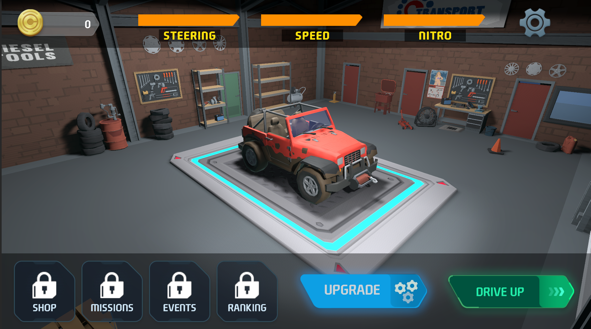
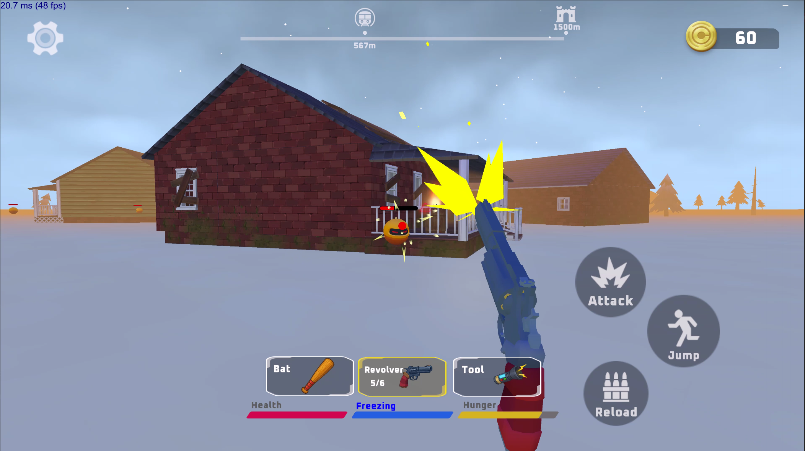

Pocket D&D
Turn-based RPG
Mobile
Hybrid Casual
Elevator Pitch
Pocket D&D is a portrait-mode, mobile, turn-based RPG built around quick, swipe-driven choices. The player draws one face-down card at a time from a dungeon deck (30 cards per run), revealing enemies or narrative events. Each card offers two—sometimes three—clear options: ignore and stay safe, or engage and risk a consequence. Success or failure on narrative events depends on the hero’s parameters; combat is turn-based and simple to read. Runs culminate in a boss fight. Sessions target 15–20 minutes and are tuned for casual and midcore players.
Core Mechanics
- Items matter: Found gear (rings, gloves, pants, etc.) boosts combat stats and improves odds of passing narrative checks.
- Draw → Decide → Resolve: Tap the deck to flip the next card. Swipe to choose an action (e.g., drink from a well vs. pass; attack vs. defend vs. use a skill). Ignoring carries low risk; engaging can reward or punish.
- Turn-based combat: On enemy cards, the player chooses Attack, Defend, Use Skill, or Use Item; then the enemy takes its turn. Outcomes are governed by straightforward stats (health, damage, defense) and status effects (e.g., poison).
- Hero growth inside the run: The hero levels up during the dungeon. He has 4 skills, each with 4 upgrade tiers (like leveling skills in MOBA games). Max character level for the run: 15.
- Clear odds signaling: Narrative cards communicate risk and potential reward in plain language so choices feel fair, not random.
Meta Progression
Soft currency: After runs, players spend an earned soft currency (gold, essense, etc.) to unlock permanent nodes in a skill tree (quality-of-life boosts, new synergies, slightly better event odds—never hard pay-to-win).
Card packs: The meta lets players obtain card packs that add new event cards, enemies, and biomes (e.g., from "Dracula’s Castle" to a "Pharaoh Desert" set). Packs expand variety and replayabilty, not raw power.
Future-leaning (post-prototype): Possibility to buy new heroes with unique skills and mechanics, custom adventures, and other meta elements.
Prototype Goals
Objective: Build a prototype for getting R1d and showing all core mechanics. Gameplay time at least 40-60 minutes
Scope:
- 1 hero, 3 biome backgrounds, ~60 event cards, 8 enemies, 3 bosses.
- Looped 3 biomes gameplay for extended replayabilty.
- Items and drops that affect both combat and event odds.
- Level-ups to 15 with 4 skills × 4 tiers.
- Tutorial (FTUE) that teaches drawing, swiping, combat, and item use in under a few cards.
- Run length: ~30 cards → boss, tuned to 15–20 minutes.
Monetization
- Free-to-play (F2P): Fair model focused on content and cosmetics.
- Boosters as IAPs: Thematic packs that add biomes, enemies, and event cards (more adventures, not direct power).
- Cosmetics: Hero skins, card frames, visual effects; optionally premium enemy presentations (purely aesthetic).
- Starter comfort options: Non-power “quality” starters (e.g., configured loadouts that save time) without breaking run balance.
- (Optional) Rewarded ads: Player-friendly uses such as a single re-roll on a card or an extra peek per run; strictly limited to avoid pressure.
References
Key References
- Reigns (iOS/Android): Iconic swipe-based narrative card game. Each card presents a dilemma with two swipe choices, shaping the player’s kingdom through risk/reward outcomes.
- Reigns: Three Kingdoms (Mobile/Netflix): Expands the same swipe formula with tactical card battles, proving the mechanic scales into combat.
Tower Defense RPG
Defense / Action RPG
Mobile
Hybrid Casual
Elevator Pitch
Tower Defense RPG is a portrait-mode, side-view defense game where a lone hero on the left holds a lane against monsters streaming in from the right. The hero auto-attacks at range while the player casts spells with drag-and-drop targeting. Enemy pressure is continuous but oscillates (sinusoidal intensity) and mixes formation patterns (lines, blocks, elites) to keep the fight varied. Each 10-minute run culminates in a boss. The long-term hook is buildcraft: perk choices + spell kit shape radically different playstyles (pure DPS, control/defense, spell-centric, etc.).
Core Mechanics
- Field & loss condition: 2D side-view, hero on the left, enemies advance from the right. You lose when the hero’s HP hits zero (no base breach mechanic).
- Hero loop: Ranged auto-attack into the lane; enemies have simple abilities to close distance or pressure positioning.
- Spells (8-slot rotation): 4 spells visible, 4 in queue (Clash-Royale-style rotation). Cast by dragging a spell onto the field; it turns into an aiming reticle (line, circle, cone—varies by spell). Global cooldown ~3s prevents spam; mana 1–10 gates cast frequency.
- Enemy flow: Continuous spawn with sinusoidal ramps (more/less pressure over time) and patterned waves (streams, blocks, elites) to keep rhythm fresh until the boss spawns at 10:00 by the timer.
- Perk level-ups during the run: Leveling speed scales with kill rate; target ~30 hero levels per run. On each level you pick a perk (brief auto-pause), from simple stat boosts (attack speed, damage) to conditional perks (e.g., “below X% HP → bonus damage”).
- Buildcraft focus: Compose a build—perks + spells that reinforce a style (auto-attack carry / tanky sustain / control caster). Future updates can add deeper spell–spell reactions (e.g., poison cloud + fireball = explosion), but not required for the prototype.
Meta Progression
- Hero upgrades: Permanent upgrades to base stats (damage, HP, mana regen, etc.) via a soft currency earned from runs.
- Spell evolution via duplicates: Collect N duplicates of a spell to unlock a branch (e.g., Fireball → bigger single hit or split into three weaker shots). Players equip the branch they prefer.
- “Tinder-like Swiper” mini-game: In meta, cards appear one by one. Swipe right (accept) = costs 3 resource, swipe left (skip) = costs 1. The pool includes perks, stat nodes, and spell evolutions; players curate their long-term progression path.
Prototype Goals
Objective: Prove the feel of continuous pressure + satisfying spell casting + meaningful build choices within a 10-minute run.
Scope:
- 1 hero, portrait side-view arena.
- 10-12 core spells with drag-targeting, global 3s cooldown, mana 1–10.
- Perk pool: ~50 perks (mix of flat boosts and a few conditional triggers).
- Enemies: 8–10 types including a few “elite” variants; 1 boss at 10:00.
- At least 6 locations with progressive difficulty + loop for replayabilty.
- Leveling curve: ~30 levels per run; perk choice pauses action briefly.
- Enemy cadence: continuous spawn with sinusoidal pressure + formation patterns.
- FTUE: tutorial that teaches dragging a spell, watching cooldown/mana, and picking a perk.
- Performance: smooth on low and mid-range devices.
Monetization
- Player-friendly rewarded ads (prototype-level): Optional perk re-roll or one extra mana burst once per run; strictly capped.
- IAP (later): Cosmetics (hero skins, spell VFX), content packs (new spells/perks/enemies), new heroes, inventory and items for heroes, hard currency introduction. Power remains run-decided by in-run choices, not purchases.
- Interstitials between locations or after win/lose situation.
References
Key References
- Clash Royale: Inspiration for the 4-visible/4-in-queue spell rotation and quick reads.
- Archero / Survivor-likes: Proof that run-based buildcraft (perk drafting, distinct playstyles) drives replay.
- Lane/TD hybrids: Shows appetite for side-view defense with escalating pressure and boss caps.
Drive Up
Obstacle Racing
Mobile (Landscape, Two-Hand)
Hybrid Arcade
Elevator Pitch
Drive Up is a landscape, two-hand, mobile physics runner where you drive a 4×4 across impossible, kit-bashed obstacle courses floating high above the world. Tracks are built from “improper” parts—rusted ship plates, beams, shanty roofs, rails, loops—with dynamic hazards like fans, hammers, and rollers. Handling is arcade-leaning (~3/10 realism): grippy, readable, forgiving. A dedicated Jump button lets you clear gaps, recover when stuck, and reach optional collectibles. Each level targets 5–10 minutes. The hook is simple: what outrageous contraption comes next?


Core Mechanics
- Controls (two hands): Left = steering (buttons or wheel). Right = Throttle, Brake/Reverse, Jump.
- Camera: Chase cam behind the car; quick look-around for awareness.
- Physics & failure: No damage model. Falling off = restart. Rollovers auto self-right after a brief moment. No fuel, no level timer.
- Checkpoints: Placed before major obstacles and used often to keep the learn–retry loop fast.
- Dynamic elements (v1): Fans that lift the car, swinging hammers, rotating rollers, wobbling platforms (no destructible geometry in the prototype).
- Objectives: Always reach the finish. Stars/coins sit in hard-to-reach pockets; collecting them drives the 3-star completion and often changes your route and timing.
Meta Progression
- Vehicles to unlock: Multiple cars with distinct feel (torque, traction, suspension travel, jump power).
- Play → unlock: Stars/coins unlock new vehicles and tracks.
- Roadmap (post-prototype): Leaderboards, time-trials, and potentially user-generated tracks.
Prototype Goals
Objective: Prove the “wow” of inventive, kit-bashed obstacles and the sticky fail → restart → mastery loop with fair, frequent checkpoints.
Scope (1 month):
- 5 handcrafted levels (5–10 min each), with a skybox that sells “high above the city/world.”
- 1 vehicle with convienient handling.
- Core dynamics: Jump, auto upright, fans, hammers, rollers, frequent checkpoints.
- HUD: progress-to-finish, star/coin counter, nearest-checkpoint marker, current restart credits.
- Performance target: smooth play on mid-range devices.
What we’ll demonstrate:
- Each level feels like a new contraption worth exploring.
- Instant, fair restarts that preserve learning momentum.
- Jump as a true verb that unlocks routes and collectible paths, not a gimmick.
Monetization
- Rewarded restarts (core): 1 ad = 5 restart credits; 1 credit = 1 restart from the last checkpoint. Checkpoints sit right before the obstacle that caused failure. Add a sensible cap (e.g., 10 credits) to prevent hoarding without pressure.
- Interstitials: Not in the prototype; can be tested between levels later if signals support it.
- Optional IAP (later): Purchasing new crazy vehicles (like banana-car, hot dog track, ect.), adding hard currency for purchasing restart credits.
References
Key References
- Drive Up - 3D obstacle climbing over improvised, high-contrast structures; strong reference for kit-bash identity.
- Trials Rising - Precision, physics-based obstacle flow with tight checkpoint/restart cadence (bike instead of car, same learn–retry rhythm).
Rope Jam
Puzzle
Mobile (Portrait)
Ultra Casual
Elevator Pitch
Rope Jam is a casual, relaxing puzzle game about untangling colored threads and sewing magical works of art. At each level, the player sees threads attached at two points and intertwined. When the player untangles them, the freed threads fly into the spool; when you collect three threads of the same color, the thread begins to fly into the canvas. This fills the picture with colors. Free all the threads to get the complete picture. Target session: 1-3 minutes.
Core Mechanics
- Drag-to-free: Physics based entanglement puzzle. Exclude ropes overlapping each other in order to put it to skein.
- Color matching → yarn ball: 3 same-color threads on skein = 1 yarn ball. Each yarn ball fills part of the artwork in its color (order is cosmetic—any color can start).
- Chill yet challenging flow: A player will face various traps and knots to solve. The pleasure is in gentle color planning and the rhythmic merge.
- Readable goals: Level ends when all threads are freed and the image is fully stitched.
- Presentation: Soft animations, cozy soundscape; optional light haptics on free/merge.
Meta Progression
- Artbook collection: Completed embroideries populate a gallery; themes can be seasonal (Nature, Cozy, Pets, Travel).
- Gentle onboarding: Tutorial shows draggings ends and the "3-of-a-kind" rule.
- Future-friendly: Optional light challenges later (move count, soft step targets) without breaking the relax identity.
Prototype Goals
Objective: Prove the relaxing drag based on physics flow and the rewarding payoff of color merge → stitching reveal within short levels.
Scope:
- Core loop: drag to free, auto-collect, 3-match to yarn ball, progressive canvas fill.
- Content: ~50 levels across 2 themes, escalating by thread count and color variety. With the loop, of course.
- UX polish: light haptics, soft audio cues, clean success screen with artwork reveal.
- Optional helpers (toggle): Undo last free and a single hint (highlights a valid same-color target) to test utility.
Monetization
- Interstitials: between levels only, at sensible spacing.
- Rewarded video: optional hint, extra undo, or instant finish of the last stitching pass (pure convenience).
- Boosters: vasious booster packs, hearts gaining, coins multipliers, booster bundles, etc.
- IAP (optional): ad-free, theme packs (new artwork sets), seasonal bundles. All gameplay remains non-pressure and fail-free.
TDS — Train Defense Shooter
Tower Defense
Mobile (Portrait)
Casual
Elevator Pitch
TDS — Car Defense Shooter is a portrait, side-view, casual tower-defense where you equipping car with guns should run away from dangerous enemies. Between runs you can essemble new guns by merging these and become stronger. Hit Start: the car moves forward at a steady pace while air (top) and ground (bottom) enemies attack from back. You fire automatically; the player triggers 1–3 active "spells" (big rocket, blade burst, shield, etc.) when energy fills. Each run lasts 5–10 minutes and is broken into levels: reach a station, spend gold earned from kills on new turrets, merge, and push to the next, harder stretch. When the car HP hits zero, you fail and restart the level. The long-term loop is simple and sticky: build → run → earn → upgrade.
Core Mechanics
- Car layout: Car has a fixed number of slots that could be expanded during playthrough or with rewards.
- Auto-fire + spells: Turrets auto-target; the player has a bottom spell bar (1–3 actives) fueled by energy (exact number of spells is part of tuning). Spells are quick, high-impact taps (rocket, blade storm, area nuke, emergency shield).
- Merge economy: Two identical turrets → merge into one higher-tier turret. Higher tier = more DPS/utility.
- Enemy vectors: Air units sweep across the top lane; ground units approach along the bottom lane—from front and back. Patterns escalate with density and composition.
- Stations = pacing gates: Clear a segment to arrive at a station (shop). Spend gold from kills to buy turrets and merge. No mid-segment pickups; runs are clean and readable.
- Failure & restart: When Car HP = 0, the level restarts. Car speed is constant; the world scrolls with parallax.
Meta Progression
- Persistent upgrades: Between runs, invest in:
- Turrets (unlock new types, raise base tier/rarity),
- Slots (add/upgrade car slots),
- Car HP (overall durability).
- Content cadence: New turret types, new enemy families, and additional cars can roll out as the account advances. (Exact theming can flex—post-apoc, sci-fi, or neutral stylized.)
Prototype Goals
Objective: Prove the fun of the assemble → merge → auto-roll loop with clear, satisfying power spikes at stations and readable dual-lane pressure (air + ground).
Scope:
- Car: 1 car with 3 slots (readable silhouette).
- Slots: small fixed grid per car (e.g., 3 slots each) to showcase merge without UI overload.
- Turrets: 6–8 types, each with merge tiers (e.g., T1→T4).
- Spells: up to 3 actives (rocket, blade burst, emergency shield) with energy gating; simple per-spell cooldowns.
- Enemies: 6–8 types spanning top air lanes and bottom ground lanes; front/back entry; pattern mixes.
- Structure: 3 levels (segments) per run; station shop between segments; run length 5–10 minutes.
- Economy: Gold from kills → buy turrets at stations → merge for power.
- Visuals: Portrait, stylized/cartoon read; parallax background; crisp VFX that clarifies top vs bottom threats.
- Performance: Smooth on mid-range mobile.
Monetization
- Rewarded ads: optional boosts (e.g., shop re-roll, bonus gold packet, emergency shield) at stations or post-fail—opt-in only.
- Interstitials: after win/fail screens (not during combat) for prototype testing.
- IAP (later, optional): cosmetic skins (cars/turrets), starter bundles, ad-free. Core power remains earned via gold, buys, and merge.
References
Key References
- Hero Tower - for the satisfying 2→1 tier climb and clear power spikes.
- Gear Truck - for the "press Start → watch/assist → shop at gates" clarity.
Frostrail
Survival Shooter
Mobile (Landscape)
First-Person
Elevator Pitch
Frostrail is a mobile, landscape, first-person survival shooter where your train is the lifeline through a procedural frozen wasteland. You drive from safe-hub city to safe-hub city on a linear track, stopping at roadside settlements to scavenge, keep the boiler burning, and stave off cold, hunger, and damage. The train runs on whatever you can feed it—scrap, wood, even valuables in a pinch—so every haul is a moral triage: burn it for heat or sell it in the next city. Enemies are robots (melee, shooter, and flying drone types) that harass you during expeditions. Sessions aim for 40–60 minutes; the loop is drive → disembark → loot & fight → refuel & warm up → push to the next city.

Core Mechanics
- Pure FPS on mobile: touch-optimized aiming/shooting; no third-person camera.
- Train as a mobile base: three tactile controls—Throttle (forward), Brake, Direction (forward/reverse)—with readable gauges for fuel, boiler heat, train HP, and storage capacity.
- Fuel pragmatism: the boiler consumes any burnable item; you decide what to sacrifice to keep moving.
- Survival bars: Temperature (cold slows/harms until you warm by the boiler), Food (simple hunger bar), Health (stims/bandages).
- Storage & logistics: a cargo car for stash and a hand cart you pull when looting so scavenging isn't one-item-at-a-time.
- Stops & POIs: pop into procedurally placed settlements (cabins, depots, gas stops) to find fuel, food, parts, ammo. Train defense while moving is out of scope for v1 (keeps focus on on-foot raids).
- Robotic enemies: baseline Melee, Shooter, and Flying drone archetypes with clear tells and drop tables.
- No companion controls in v1: (robot "taming" can be a roadmap item).
Meta Progression
- City hubs (safe): buy/sell, repair, accept lightweight tasks.
- Permanent upgrades: train HP, fuel efficiency, boiler output, cargo slots; player carry limit and basic weapon handling.
- Route unlocking: reach new cities/segments to expand the procedural track set.
- Roadmap (post-prototype): train car modules (turret, workshop), simple robot-ally capture, dynamic ambushes while rolling.
Prototype Goals
Objective: Prove that "your train is your warmth and will" works on mobile FPS: the tension of burning valuables for fuel, the satisfaction of short, risky looting trips, and the clarity of three-lever train control between procedural stops.
Scope (4–6 weeks):
- 1 winter biome, linear procedural track between 2 hub cities with 3–4 POI templates.
- Train controls: throttle/brake/direction; boiler UI; fuel-anything loop; cargo car + hand cart.
- Survival: temperature, hunger, health; warm-up at boiler.
- Combat: 2–3 firearms (SMG, shotgun, rifle), basic melee; 3 robot types (melee, shooter, drone).
- Session arc: start in City A → survive 1–2 legs → reach City B. Target 40–60 minutes.
- Mobile polish: readable UI, big interactables, aim assist, battery-friendly effects.
Monetization
- F2P, player-first:
- Cosmetics (weapon skins, train liveries), ad-free pack; optional battle pass only for cosmetics/boosted payouts.
- Rewarded ads (opt-in): instant warm-up at the boiler in hubs, minor repair kit, or fast travel back to train after a raid—strict session caps.
- No pay-to-win power in prototype: premium weapons are skins/variants only if tested later.
References
Key References
- Voidtrain - survival and crafting with a customizable train as your moving base; demonstrates the "train as home" fantasy.
- Pacific Drive - first-person, vehicle-centric survival where your ride is the companion and the meta loop; strong proof of the "vehicle as character" appeal.
- The Long Dark - benchmark winter survival pacing and cold management; informs readable cold/food loops on mobile.
- Snowpiercer (series/film): cultural shorthand for "humanity on a train in a frozen world," useful for tone and art direction references.
Necro March
Tower Defense
Mobile (Portrait)
Strategy
Elevator Pitch
Necro March is a portrait, side-view TDS-like where you play a necromancer marching a single lane toward a city to raze it. Enemies stream in continuously from right to left; you raise fallen foes into allies and cast tap-to-use spells from a fixed bar to keep the push alive. On screen we show 15–20 minions for clarity while excess units accumulate in a counter. Runs target 5–10 minutes; fail on necromancer death, succeed by destroying the city gate/core. Between levels you upgrade spells and merge artifacts to amplify your build.
Core Mechanics
- Field & flow: One-lane side view; enemies overlap and pass through each other (and your horde) for clean reads. Spawn is continuous with pattern injections (bursts, elites, flyers).
- Raising the dead: A spell-based Raise converts nearby corpses into your units. Your army has no hard cap (UI shows ~15–20; overflow tracked numerically).
- Unit roles: Raised units mirror archetypes (melee "knights", ranged "archers", flyers, etc.); roles matter against mixed waves.
- Spells UI: Fixed spell bar (no rotation). Tap-to-cast; mana accumulates over time without cap.
- Ad-banked mana (optional): A button can cash-out stored mana via a rewarded ad, giving a timed surge for big moments.
- Win/Loss: Reach and destroy the city to win; necromancer dies → run fails.
Meta Progression
- Spell power-ups: Between levels, upgrade damage/area/uptime of key spells (Raise, AoE, control, buffs).
- Merge artifacts: Classic 2→1 merge to raise artifact tier; artifacts grant passive auras (e.g., +minion HP, +Raise radius, +anti-air damage).
- Drops mid-run: Items can drop during a level but are evaluated/merged post-run to keep combat flow uninterrupted.
Prototype Goals
Objective: Prove the fantasy of snowballing an undead horde under a continuous wave script, with satisfying tap-to-cast control and a clear between-levels power ramp.
Scope (≈1 month):
- 1 lane, portrait; continuous spawn with 3–4 simple patterns (stream, burst, elites, flyers).
- Necromancer + 8–10 enemy types (melee/ranged/flyer variants).
- Spells: fixed bar, tap-to-cast, mana that accumulates; Raise + 2–3 support spells (AoE nuke, slow/root, group buff).
- UI: on-screen horde cap ~20 with overflow counter, simple city-gate HP.
- Meta: spell upgrade screen; artifact merge (2→1) with 3–4 passives.
- FTUE: 45–60s tutorial (first Raise, first spell, first merge).
What we'll demonstrate:
- The power curve of raising fallen enemies into a snowball.
- Clean readability despite mass units via visible-cap + counter.
- A repeatable build loop (upgrade spells, merge artifacts) that meaningfully changes outcomes next run.
Monetization
- Rewarded ads (opt-in): Mana cash-out button; post-fail revive once per run; artifact re-roll on the results screen.
- Prototype excludes IAP; later options: ad-free, cosmetic skins (necromancer/FX), starter merge bundles—without pay-to-win.
References
Key References
- Be My Horde - demonstrates effective horde management and unit raising mechanics in a side-view format; shows how to handle large numbers of units without overwhelming the player.
- Necrosmith - showcases satisfying undead army building and territory expansion; proves the appeal of necromantic progression and base management systems.
- Grow Castle - mobile tower defense with large-scale unit management and wave-based progression; demonstrates readable UI for handling multiple unit types and upgrades.
Meme Bucket Brigade
Tower Defense
Mobile (Portrait)
Hybrid Casual
Elevator Pitch
Meme Bucket Brigade is a portrait, side-view TDS-like where you throw units into a merge bucket, fuse them into higher tiers, then send your rolling turret-tower to mow down waves. Core vibe is playful and viral: instead of slimes, you fling meme faces and characters into the bucket (two of the same merge up; absurd combo names are the joke), then hit Start and watch your meme-stacked cart auto-shoot through incoming enemies. Runs target 5–10 minutes with station breaks to buy, merge, and push further.
Core Mechanics
- Two-phase loop: Phase A — Bucket Merge: aim and throw units into the bucket; identical memes merge up the tier ladder (2→1, 1→2→3…). Phase B — Roll & Shoot: the cart auto-drives side-view while enemies attack from both directions.
- Curated loadout: Merged memes attach as turrets and abilities on the cart, letting you shape firing patterns and control tools.
- Active spells: Trigger 1–3 tap-to-cast spells (big rocket, screen nuke, emergency shield) on energy cooldowns to reinforce clutch moments.
- Stations as pacing gates: Clear a segment to reach a station shop where you buy new memes, reroll the bucket, merge up, and socket buffs (crit beam, multi-shot, anti-air).
- Readable spectacle: Keep on-screen counts low but expressive via bold silhouettes, parallax, and satisfying projectile VFX.
Meta Progression
- Unit Almanac: Unlock new meme families and their tier chains (e.g., Tier 1 “Bombardilo Crocodilo” → Tier 2 “Latte Lizard” → Tier 3 “Cappuccino Ballerina”).
- Permanent perks: Upgrade cart slots, base fire rate, and spell energy regeneration to extend runs.
- Artifacts (optional merge): Merge 2→1 artifact drops that grant global buffs such as chain lightning chance or anti-air damage.
Prototype Goals
Objective: Prove the short, sticky merge-then-run loop, the humor of meme evolutions, and the clarity of station power spikes within a 5–10 minute session.
Scope:
- Cart: 1 chassis with 3–4 turret sockets in a portrait side-view setup.
- Units: 6–8 meme families, each with 3–4 merge tiers.
- Spells: up to 3 actives (rocket, shield, AoE) with energy gating.
- Enemies: 6–8 types including ground rushers, tanks, shooters, flyers, and splitters.
- Structure: 3 segments per run with stations between segments for buy/reroll/merge.
- UX polish: big aim arc for throws, juicy merge VFX, readable projectile trails.
Monetization
- Rewarded ads (opt-in): Station reroll, bonus gold packet, emergency shield, and post-fail continue once per run.
- Interstitials: After win/fail screens (never mid-run) for prototype tuning.
- IAP (later): Ad-free option, meme skin packs, and starter bundles (base units plus rerolls) without pay-to-win advantages.
References
Key References
- King Slime – Tower Defense - mobile proof of the throw → merge → defend loop, demonstrating how fused units scale defensive output.
- Merge Fellas - showcases meme-based merge chains with viral tier reveals and a playful tone that informs content cadence.